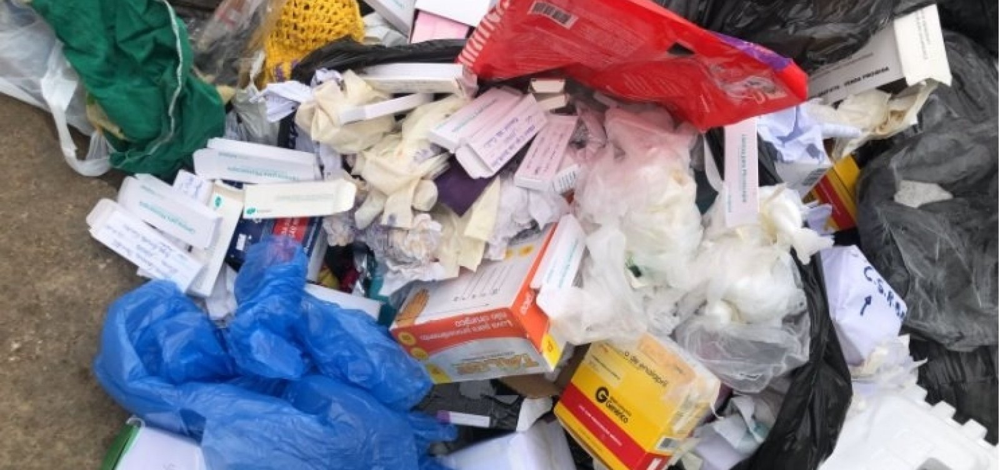

Lixo Hospitalar: O que caracteriza esse tipo de resíduo?
O lixo Hospitalar é uma mistura diversificada de materiais, que inclui desde resíduos biológicos, como sangue e tecidos, até materiais químicos, como medicamentos vencidos e produtos químicos de limpeza, além de objetos perfurocortantes e equipamentos médicos descartados. Devido à sua natureza variada e potencialmente perigosa, o manejo e descarte inadequados do lixo hospitalar podem representar sérios riscos para a saúde pública e o meio ambiente.
Nos bastidores dos hospitais, uma questão crítica e muitas vezes negligenciada demanda atenção: o lixo hospitalar. Gerado diariamente em instituições de saúde em todo o mundo, o lixo hospitalar é uma categoria especial de resíduos que requer tratamento cuidadoso e protocolos rigorosos de descarte.
Qual a importância de descartar o lixo Hospitalar de maneira correta?
Para lidar com esse desafio, os hospitais devem adotar procedimentos estritos para a segregação, armazenamento e eliminação segura do lixo hospitalar. Isso inclui a separação dos diferentes tipos de resíduos em recipientes adequados, como caixas de papelão para resíduos comuns, recipientes rígidos para materiais perfurocortantes e contentores especiais para resíduos químicos e biológicos.
Além disso, é essencial que os hospitais trabalhem em estreita colaboração com empresas especializadas em gerenciamento de resíduos para garantir que o lixo hospitalar seja coletado, transportado e tratado de acordo com as regulamentações locais e padrões de segurança. Isso pode incluir a esterilização, incineração ou tratamento químico dos resíduos, dependendo de sua natureza e potencial de contaminação. A conscientização e a educação também desempenham um papel fundamental na gestão adequada do lixo hospitalar.
